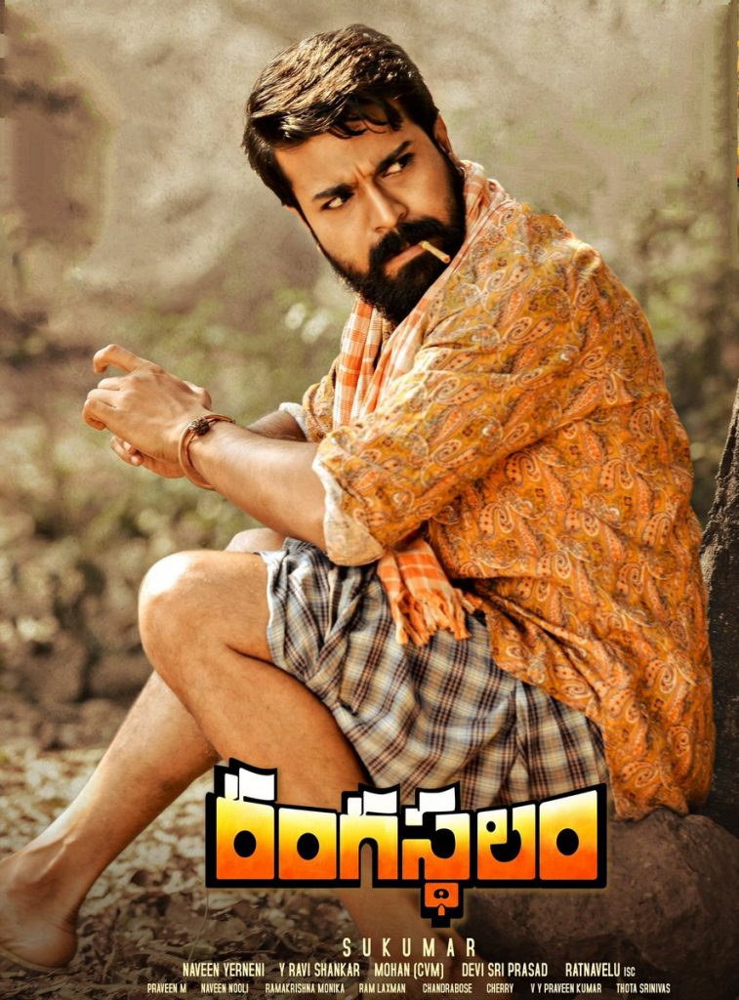

Tumbbad just hits the same way Kantara does because it feels like you’re watching some cursed old legend unfold. The gods feel real and scary, not symbolic, and the whole movie has this heavy, ancient vibe where greed and faith keep clashing. Everything about it feels rooted in folklore, like the land and the story are alive. It stays with you even after it ends.
Rangasthalam

Rangasthalam gives that same raw, earthy feeling where the village, the people, and the past all matter. You can really feel the anger and pain that’s been building for years, and it doesn’t feel forced or heroic, just emotional and real. The story slowly pulls you in and then hits hard when everything comes together. By the end, it feels personal, not just dramatic.
Baahubali: The Beginning
Baahubali: The Beginning feels like listening to a massive epic about kings, promises, and destiny. Honor and duty drive every character, and traditions feel bigger than any one person. The scale is huge, but the emotions still land. It has that myth-meets-history vibe that makes Kantara so special.